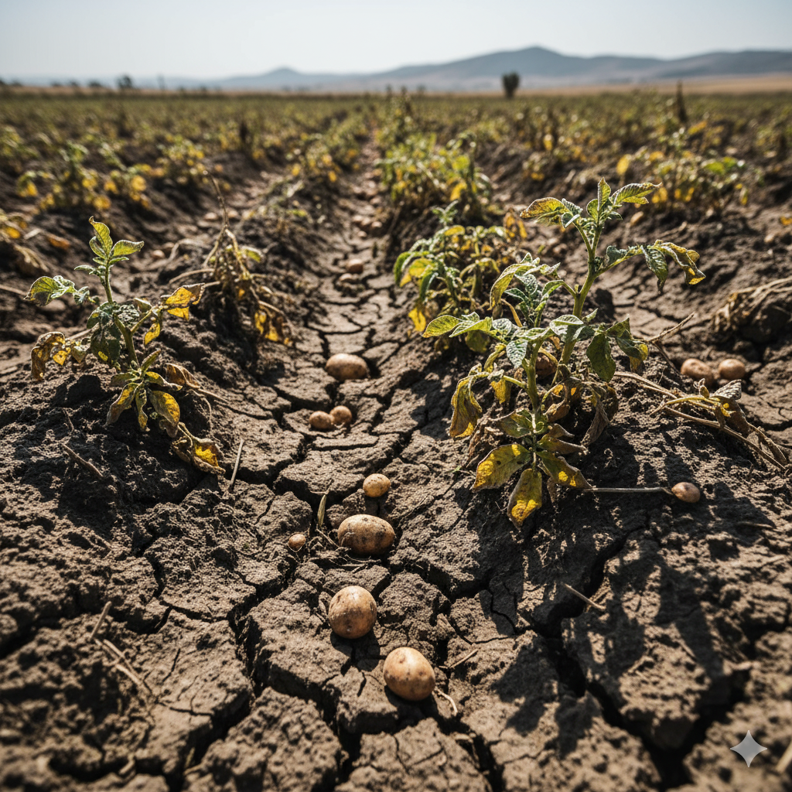
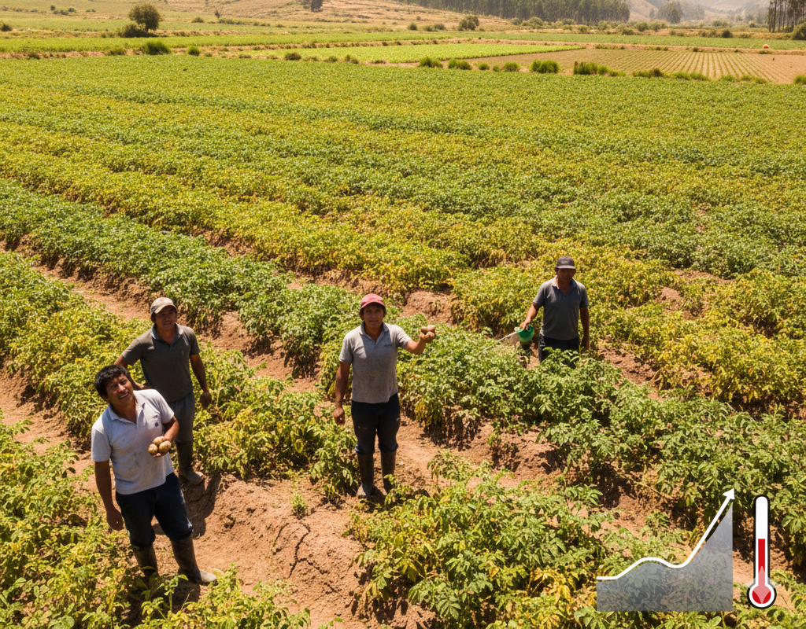

¿Conoces los problemas climaticos el cultivo de papa?
Acá sabrás el impacto de los problemas climáticos dentro de la Provincia de Ubaté
Déficit de agua
Fenómeno del niño

Se manifiesta no solo por la falta de precipitación, sino por la mala distribución del agua a lo largo del ciclo. En la región andina, esto se relaciona con la variabilidad climática estacional ( Fenómeno de El Niño). El agua insuficiente reduce la turgencia celular y la capacidad fotosintética.
La consecuencia más grave es la interrupción de la tuberización,
resultando en tubérculos pequeños o en una drástica reducción del
número.
El estrés hídrico puede provocar deformaciones,
agrietamiento de los tubérculos y hacer que la planta sea más
susceptible a plagas como los áfidos o arañas.
- Priorizar el riego complementario en las etapas sensibles: desde la brotación hasta la tuberización.
- La falta de agua en la tuberización es la fase más crítica que debe evitarse.
- Utilizar coberturas vegetales (mulch) o rastrojos sobre el suelo.
- El mulch reduce la evaporación y ayuda a conservar la humedad.
- Invertir en la construcción y mantenimiento de reservorios.
- Estas estructuras aseguran una fuente hídrica de respaldo para el riego de rescate.
- Considerar técnicas de labranza mínima para evitar que el suelo se reseque rápidamente.
- Realizar análisis de suelo para determinar su capacidad de retención de agua y optimizar los intervalos de riego.
Incremento de temperatura

El Incremento de Temperatura se refiere a la tendencia climática a largo plazo que eleva la temperatura promedio en las zonas de cultivo. Este fenómeno obliga al cultivo de papa, que se desarrolla óptimamente en condiciones frías, a adaptarse a un rango térmico más cálido. Este aumento altera las condiciones agroecológicas tradicionales, afectando el metabolismo de la planta y modificando la dinámica de plagas y enfermedades.
El impacto más directo es el estrés térmico. Cuando las temperaturas
superan el rango ideal, se produce una inhibición de la
tuberización, lo que significa que la planta gasta más energía en
follaje y menos en el tubérculo, resultando en una severa
disminución del rendimiento y la calidad (tubérculos más pequeños o
deformes).
A nivel fitosanitario, el calor acorta los ciclos de vida
de insectos plaga como la Polilla Guatemalteca y el Gusano Blanco,
permitiendo que completen más generaciones en un año y que su
población crezca de manera exponencial. Además, patógenos y plagas
antes confinadas a zonas bajas comienzan a ascender a las áreas
tradicionalmente paperas.
El manejo debe orientarse a la adaptación climática y la resiliencia.
Es fundamental buscar y sembrar variedades de papa que hayan
demostrado tolerancia al estrés por calor, manteniendo una buena
capacidad de tuberización. Los productores deben ajustar el
calendario de siembra basándose en proyecciones climáticas,
asegurando que el período de máximo calor no coincida con la fase
crítica de tuberización.
Adicionalmente, se debe reforzar el Manejo
Integrado de Plagas (MIP), incrementando la vigilancia y el uso de
métodos biológicos y culturales para contrarrestar la mayor presión
de insectos que trae consigo el aumento de la temperatura.